←все выпуски
42/6915.11.2007
РАЗГРУЗОЧНЫЙ ДЕНЬ
No comments (мировая сцена)
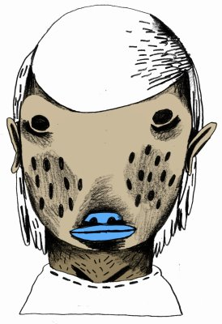
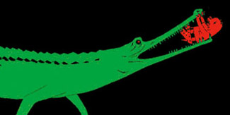
Marcus Huber. Давно его люблю.
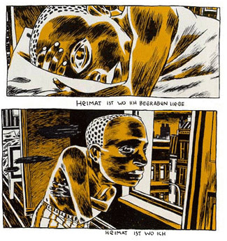
Приятнейший сайт monsters.co.uk. В частности Lynn Hatzius – такой Джонатон Розен в юбке:
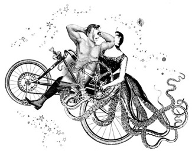
На всякий случай сам Jonathon Rosen, полномочный представитель в иллюстрации группы The Residents – вдруг не было:
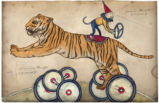
И – отчасти – Макс Покалев в юбке, Suzanne Barrett:
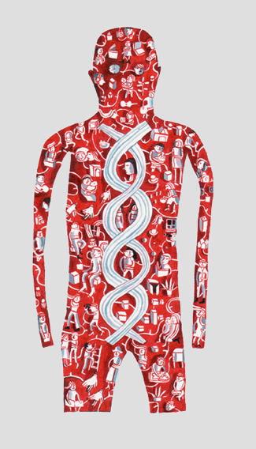
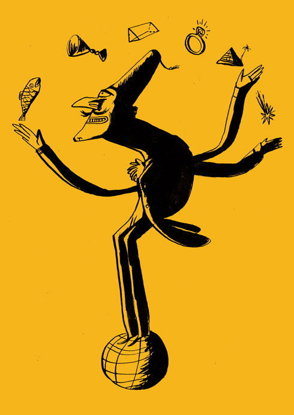
Andy Fischli – местами полный восторг:
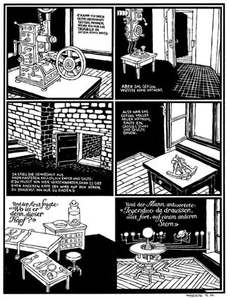
Luke Best, и правда, не худший
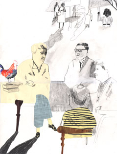
вообще сюда, кто вдруг не был.
там же Annabel Wright, нечеловечески прекрасная,
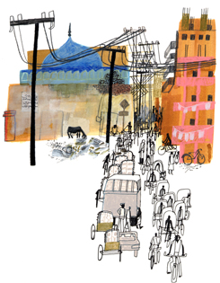
и Tom Gauld...
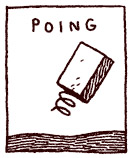
...про которого в свой срок отдельно.
Источник: оригинал выпуска в Wayback Machine ↗